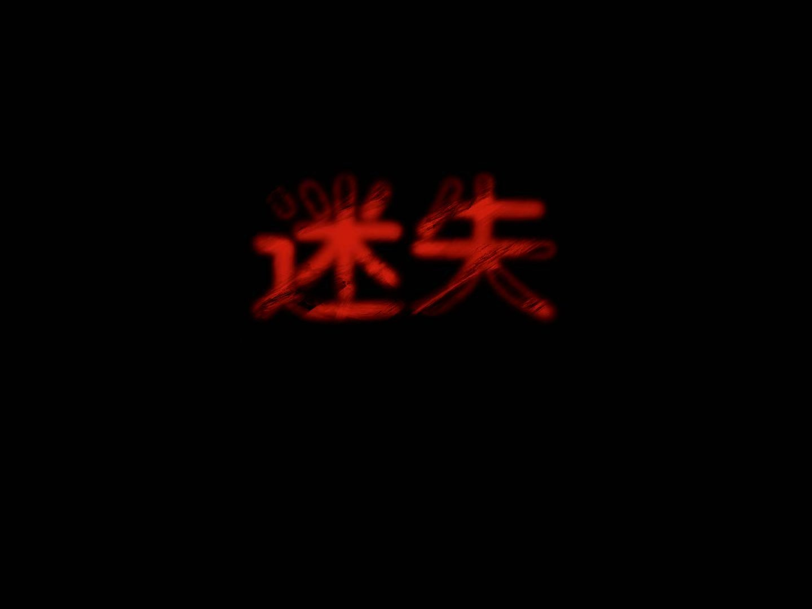
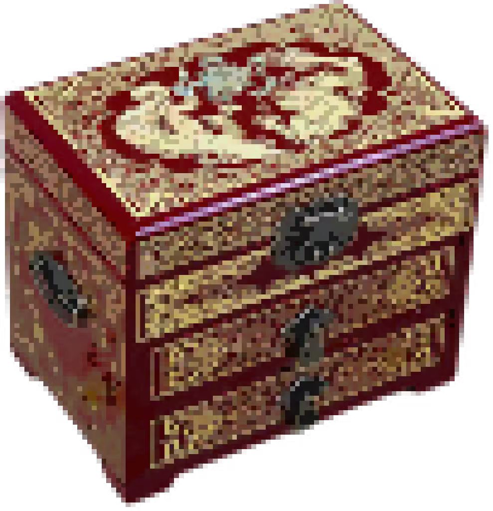
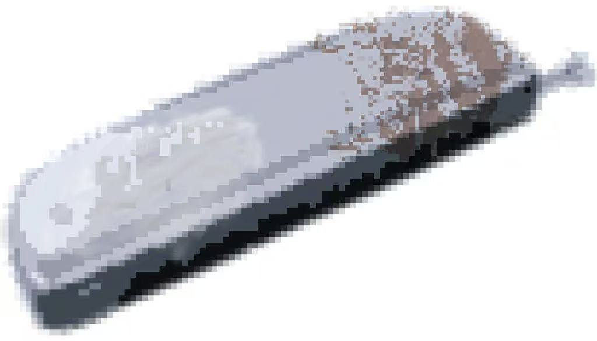
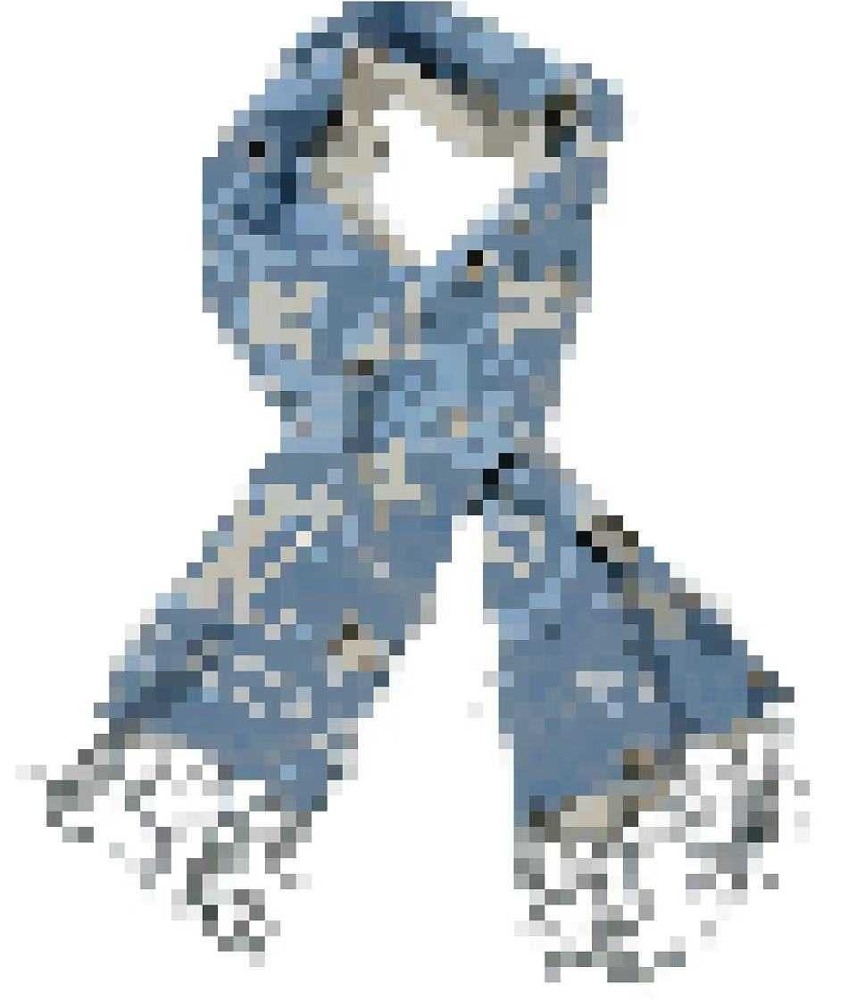
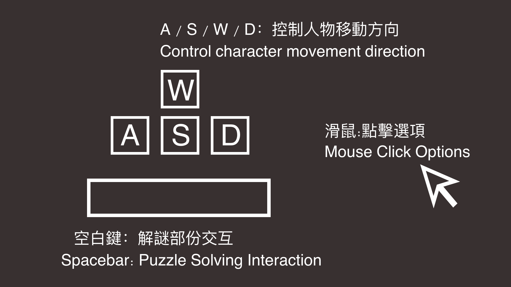

Gameplay 玩法說明
新娘潭結局 Bride's Pool Endings
在新娘潭，玩家將會遇到哭泣的新娘阿鳳。途中會發現她的遺物——梳子、繡花鞋、首飾盒。玩家可選擇是否撿起？是否歸還？這將導向截然不同的結局。
At Bride's Pool, players will encounter the weeping bride A Feng. Along the way, they will discover her lost belongings — a comb, embroidered shoes, and a jewelry box. The player's choices — whether to pick them up and whether to return them — will lead to completely different fates.

If the player tries to keep the belongings and lies about not having them, A Feng will angrily drag the protagonist into the pool. Countless pale hands grab the protagonist, trapping them forever beneath Bride's Pool, unlocking the 'Bride's Invitation' ending.
最終結局 The Final Endings
完成鎖羅盆村、新娘潭與所有任務後，玩家將面對最終的抉擇。
After completing all tasks in So Lo Pun Village, Bride's Pool, and all other locations, the player will face the final choice.

The player returns all the lost items, helping the spirits find peace. The protagonist and Ati finally hold hands — Ati's story also comes to an end at this moment. A warm light blooms. The protagonist returns to the Sai Kung trail and looks down at his palm, where three items lie quietly: a piece of red fabric, a glowing ticket, and a small piece of blue yarn. From afar, the gentle breeze carries the faint sound of a harmonica, playing the melody of "Moonlight."
The player completes the mission and says goodbye to Ati. The protagonist boards an old, worn-out bus with no visible driver and hands the glowing ticket to him. The red thread glows faintly. The mist clears, revealing a light ahead. The protagonist wakes up on the soil and returns to normal life, never speaking of this experience to anyone. But in the quiet of the night, that red thread still wraps around the pinky.
線索收集 Clue Collection



操作方式 Controls
